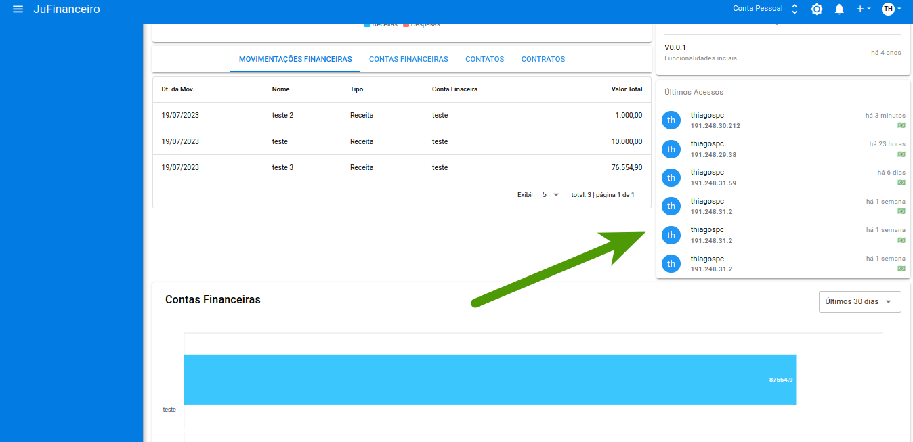

➡️ O que é o Sistema?
O sistema Janela Única tem como principal objetivo registar e documentar todas as NFSe's emitidas.
➡️ Quem deve usar o sistema?
O Sistema de NFSe é indicado para qualquer empresa ou profissional autônomo que realize atividades de prestação de serviços.
➡️ Quais as vantagens de usar o sistema?
Serão apresentadas as seguintes informações:
➡️ O dashboard é uma forma de mostrar os conteúdos coletados através do software JuFinanceiro de várias fontes diferentes de uma só vez e com o tratamento adequado.
Serão apresentadas as seguintes informações:
➡️ Os Acessos são uma resultante dos direitos de execução/permissão relacionado a um objeto de sistema.

Serão apresentadas as seguintes informações:
➡️ As Integrações
➡️ O que é uma NFS-e?
Uma NFS-e (Nota Fiscal de Serviços Eletrônica) é um documento de existência digital, gerado e armazenado eletronicamente em Ambiente Nacional pela RFB, pela prefeitura ou por outra entidade conveniada, para documentar as operações de prestação de serviços.
➡️ Para emitur uma NFS-e é necessário seguir os seguintes passos:
➡️ Preencher os campos Ins. Municipal e CPF/CNPJ

➡️ Após isto, preencha os seguintes campos.
➡️ O que é um Cnae?
É a Classificação Nacional de Atividades Econômicas utilizada para determinar quais atividades são exercidas por uma empresa. Obrigatória a todas as pessoas jurídicas, inclusive autônomos e organizações sem fins lucrativos, a CNAE é essencial para obtenção do CNPJ.
➡️ Quais os tipos de Serviços?
Um serviço de uma empresa prestado para a prefeitura é uma atividade ou trabalho especializado que uma empresa oferece ao município ou administração local para atender a demandas específicas e necessidades governamentais. Esse tipo de serviço pode variar amplamente, abrangendo desde consultorias e assessorias técnicas até a implementação e manutenção de sistemas, obras públicas, fornecimento de equipamentos, entre outros.
➡️ Após isso faça os seguintes passos para ativação da NFS-e:
➡️ Edite a NFS-e caso necessário:
↳ Autenticação.
↳ Aliquota e Local.
↳ Recibo.
➡️ Após isso iremos gerar a NFS-e no campo RPS:
➡️ O que é RPS?
é o Recibo Provisório de Serviços. Documento autorizado pelo Fisco e fornecido pelo contribuinte ao tomador do serviço contendo os dados de uma prestação de serviços que deverão ser informados ou transmitidos posteriormente a o Fisco Municipal quando não for possível a geração imediata da respectiva NFS-e.
➡️ Preencha os campos:

Serão apresentadas as seguintes informações:
➡️ Os Faturamentos são os principais indicadores da saúde financeira de um negócio, desde que utilizado da forma correta.
➡️ Primeiro, faturamento não é o mesmo que monetização, e é necessário entender a diferença para determinar se está redendo lucro dinheiro para a empresa.
➡️ Além disso, existem várias outras métricas que precisam ser usadas em conjunto para avaliar se o negócio está ganhando dinheiro suficiente, se as vendas dando resultado e se os lucros virão esperados.
Planos:
Cartões:
Faturas: